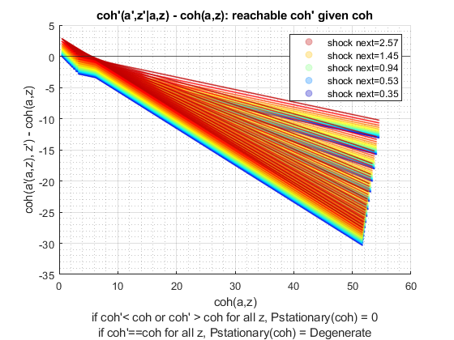
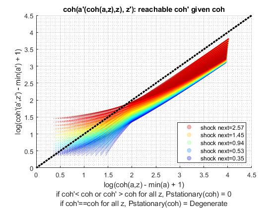
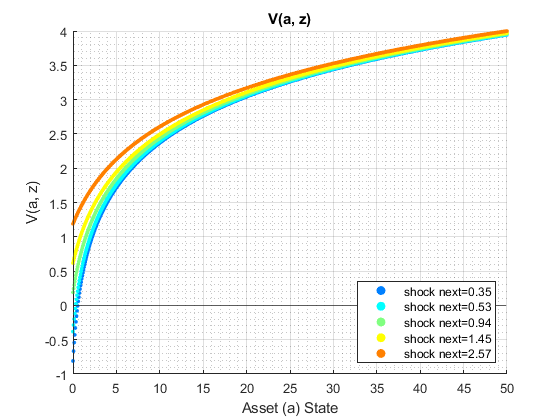
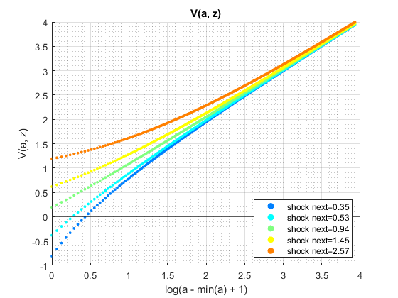
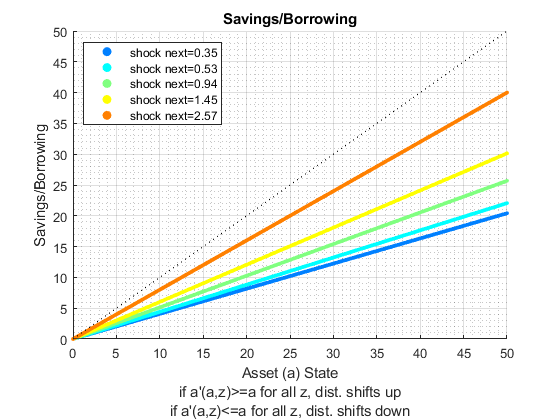
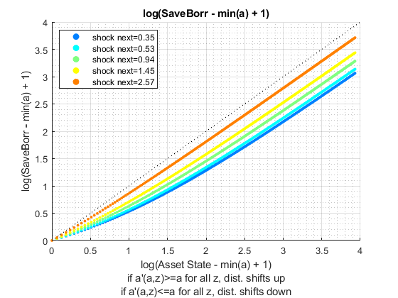
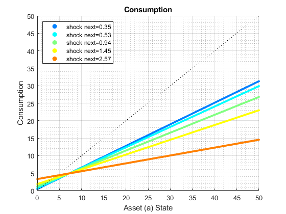

Contents
back to Fan's Dynamic Assets Repository Table of Content.
function ff_az_vf_post_graph(varargin)
FF_AZ_VF_POST_GRAPH genereate 3 graphs
Generates three graphs:
- Value Function Graph
- Policy Function Consumption and Asset Choices, Level and log
- Consumption and Asset as Percentages
Run this function directly with randomly generates matrixes for graphs and tables
@param param_map container parameter container
@param support_map container support container
@param armt_map container container with states, choices and shocks grids that are inputs for grid based solution algorithm
@param result_map container contains policy function matrix, value function matrix, iteration results; als coh consumption and other matrixes
@example
ff_az_vf_post_graph(param_map, support_map, armt_map, result_map);
Default
params_len = length(varargin); bl_input_override = 0; if (params_len == 5) bl_input_override = varargin{5}; end if (bl_input_override) % if invoked from outside overrid fully [param_map, support_map, armt_map, result_map, ~] = varargin{:}; else clear all; close all; % internal invoke for testing it_param_set = 4; bl_input_override = true; % Get Parameters [param_map, support_map] = ffs_az_set_default_param(it_param_set); [armt_map, func_map] = ffs_az_get_funcgrid(param_map, support_map, bl_input_override); % 1 for override % Generate Default val and policy matrixes params_group = values(armt_map, {'ar_a', 'ar_z'}); [ar_a, ar_z] = params_group{:}; params_group = values(func_map, {'f_util_standin', 'f_cons', 'f_coh'}); [f_util_standin, f_cons, f_coh] = params_group{:}; % Set Defaults mt_val = f_util_standin(ar_z, ar_a'); mt_pol_a = zeros(size(mt_val)) + ar_a'*(cumsum(sort(ar_z))/sum(ar_z)*0.4 + 0.4); mt_cons = f_cons(ar_z, ar_a', mt_pol_a); mt_coh = f_coh(ar_z, ar_a'); % Set Results Map result_map = containers.Map('KeyType','char', 'ValueType','any'); result_map('mt_val') = mt_val; result_map('mt_pol_a') = mt_pol_a; result_map('mt_cons') = mt_cons; result_map('mt_coh') = mt_coh; end
Parse Parameters
% param_map params_group = values(param_map, {'fl_b_bd', 'it_z_n'}); [fl_b_bd, it_z_n] = params_group{:}; % support_map params_group = values(support_map, {'bl_graph_onebyones', 'bl_graph_val', 'bl_graph_pol_lvl', 'bl_graph_pol_pct'}); [bl_graph_onebyones, bl_graph_val, bl_graph_pol_lvl, bl_graph_pol_pct] = params_group{:}; params_group = values(support_map, {'bl_img_save', 'st_img_path', 'st_img_prefix', 'st_img_name_main', 'st_img_suffix'}); [bl_img_save, st_img_path, st_img_prefix, st_img_name_main, st_img_suffix] = params_group{:}; params_group = values(support_map, {'st_title_prefix'}); [st_title_prefix] = params_group{:}; % armt_map params_group = values(armt_map, {'ar_a', 'ar_z'}); [ar_a, ar_z] = params_group{:}; % result_map params_group = values(result_map, {'mt_cons', 'mt_coh', 'mt_val', 'mt_pol_a'}); [mt_cons, mt_coh, mt_val, mt_pol_a] = params_group{:}; % How many zs to Graph ar_it_z_graph = ([1 round((it_z_n)/4) round(2*((it_z_n)/4)) round(3*((it_z_n)/4)) (it_z_n)]);
Graphing Values
if (bl_graph_val) if(~bl_graph_onebyones) figure('PaperPosition', [0 0 7 4]); end for sub_j=1:1:1 if(sub_j==1) mt_outcome = mt_val; st_y_label = 'V(a, z)'; end if(~bl_graph_onebyones) subplot(1,1,sub_j) else figure('PaperPosition', [0 0 7 4]); end hold on; clr = jet(length(ar_it_z_graph)); i_ctr = 0; for i = ar_it_z_graph i_ctr = i_ctr + 1; scatter(ar_a, mt_outcome(:, i), 5, ... 'MarkerEdgeColor', clr(i_ctr,:), ... 'MarkerFaceColor', clr(i_ctr,:)); end grid on; grid minor; legendCell = cellstr(num2str(ar_z', 'shock=%3.2f')); title([st_title_prefix 'Asset, Shocks, and Value/Utility']) ylabel(st_y_label) xlabel({'Asset State'}) legend(legendCell(ar_it_z_graph), 'Location','southeast'); xline0 = xline(0); xline0.HandleVisibility = 'off'; yline0 = yline(0); yline0.HandleVisibility = 'off'; end % save file if (bl_img_save) mkdir(support_map('st_img_path')); st_file_name = [st_img_prefix st_img_name_main '_val' st_img_suffix]; saveas(gcf, strcat(st_img_path, st_file_name)); end end
Graphing Choice Levels
if (bl_graph_pol_lvl) if(~bl_graph_onebyones) figure('PaperPosition', [0 0 14 8]); end for sub_j=1:1:4 if(sub_j==1 || sub_j == 3) mt_outcome = mt_pol_a; end if(sub_j==2 || sub_j == 4) mt_outcome = mt_cons; end if(~bl_graph_onebyones) subplot(2,2,sub_j) else figure('PaperPosition', [0 0 7 4]); end hold on; clr = jet(length(ar_it_z_graph)); i_ctr = 0; for i = ar_it_z_graph i_ctr = i_ctr + 1; ar_opti_curz = mt_outcome(:, i); if(sub_j==1 || sub_j == 2) ar_a_curz_use = ar_a'; ar_opti_curz_use = ar_opti_curz'; elseif(sub_j==3 || sub_j == 4) ar_a_curz_use = log(ar_a' - fl_b_bd + 1); if(sub_j==3) % borrow save ar_opti_curz_use = log(ar_opti_curz' - fl_b_bd + 1); end if(sub_j == 4) % consumption ar_opti_curz_use = log(ar_opti_curz' + 1); end end scatter(ar_a_curz_use, ar_opti_curz_use, 5, ... 'MarkerEdgeColor', clr(i_ctr,:), ... 'MarkerFaceColor', clr(i_ctr,:)); end if(sub_j==1) st_y_label = 'Savings/Borrowing'; st_x_label = 'Asset State'; end if(sub_j==2) st_y_label = 'Consumption'; st_x_label = 'Asset State'; end if(sub_j==3) st_y_label = 'log(SaveBorr - borrbound + 1)'; st_x_label = 'log(AssetState - borrbound + 1)'; end if(sub_j==4) st_y_label = 'log(Consumption + 1)'; st_x_label = 'log(AssetState - borrbound + 1)'; end grid on; legendCell = cellstr(num2str(ar_z', 'shock=%3.2f')); title([st_title_prefix 'Asset, Shocks and Choices (Levels)']); ylabel(st_y_label); xlabel(st_x_label); legend(legendCell(ar_it_z_graph), 'Location','northwest'); hline = refline([1 0]); hline.Color = 'k'; hline.LineStyle = ':'; hline.HandleVisibility = 'off'; if(sub_j==3 || sub_j == 4) else xline0 = xline(0); xline0.HandleVisibility = 'off'; yline0 = yline(0); yline0.HandleVisibility = 'off'; end grid on; grid minor; end % save file if (bl_img_save) mkdir(support_map('st_img_path')); st_file_name = [st_img_prefix st_img_name_main '_pol_lvl' st_img_suffix]; saveas(gcf, strcat(st_img_path, st_file_name)); end end   
Graphing Choice Percentages
if (bl_graph_pol_pct) if(~bl_graph_onebyones) figure('PaperPosition', [0 0 14 4]); end for sub_j=1:1:2 mt_outcome = zeros(size(mt_pol_a)); mt_it_borr_idx = (mt_pol_a < 0); if(sub_j==1) mt_outcome(mt_it_borr_idx) = -mt_pol_a(mt_it_borr_idx)./fl_b_bd; mt_outcome(~mt_it_borr_idx) = mt_pol_a(~mt_it_borr_idx)./mt_coh(~mt_it_borr_idx); st_y_label = 'aprime/borrbound if br; aprime/cashonhand if sv'; st_legend_loc = 'southeast'; st_title = 'Asset Choice As Fraction'; end if(sub_j==2) mt_outcome(mt_it_borr_idx) = mt_cons(mt_it_borr_idx)./(mt_coh(mt_it_borr_idx) + mt_pol_a(mt_it_borr_idx)); mt_outcome(~mt_it_borr_idx) = mt_cons(~mt_it_borr_idx)./mt_coh(~mt_it_borr_idx); st_y_label = 'c/(coh-aprime) if br; c/cashonhand if sv'; st_legend_loc = 'northeast'; st_title = 'Consumption Choice As Fraction'; end if(~bl_graph_onebyones) subplot(1,2,sub_j) else figure('PaperPosition', [0 0 7 4]); end hold on; clr = jet(length(ar_it_z_graph)); i_ctr = 0; for i = ar_it_z_graph i_ctr = i_ctr + 1; ar_opti_curz = mt_outcome(:, i); scatter(ar_a, ar_opti_curz, 5, ... 'MarkerEdgeColor', clr(i_ctr,:), ... 'MarkerFaceColor', clr(i_ctr,:)); end grid on; legendCell = cellstr(num2str(ar_z', 'shock=%3.2f')); title([st_title_prefix st_title]) ylabel(st_y_label) xlabel({'Asset State'}) legend(legendCell(ar_it_z_graph), 'Location', st_legend_loc); % xlim([min(ar_coh_curz)+1.5 15]); xline0 = xline(0); xline0.HandleVisibility = 'off'; yline0 = yline(0); yline0.HandleVisibility = 'off'; yline0 = yline(1); yline0.HandleVisibility = 'off'; if(sub_j==1) yline0 = yline(-1); yline0.HandleVisibility = 'off'; end grid on; grid minor; end % save file if (bl_img_save) mkdir(support_map('st_img_path')); st_file_name = [st_img_prefix st_img_name_main '_pol_pct' st_img_suffix]; saveas(gcf, strcat(st_img_path, st_file_name)); end end 
end